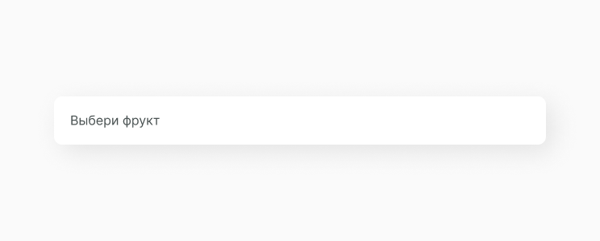
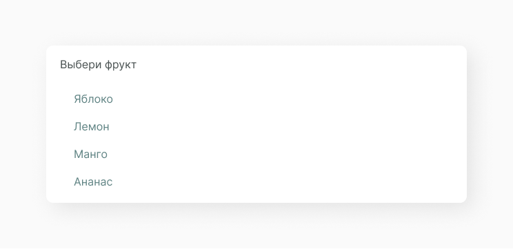
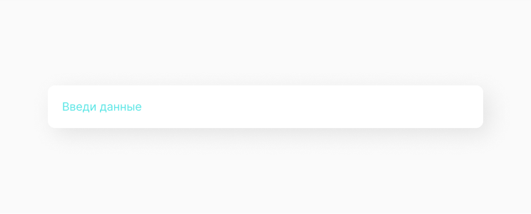
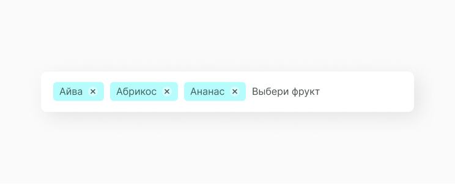
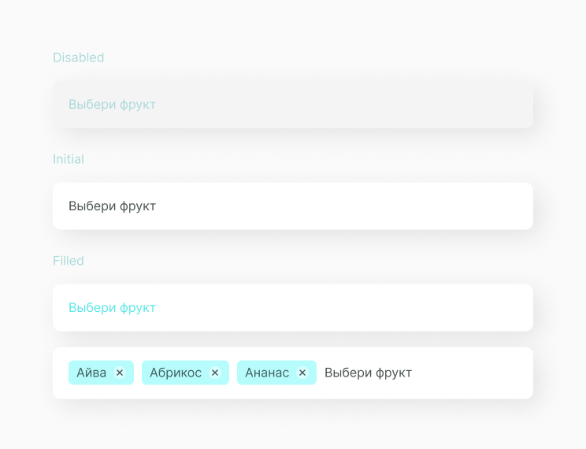
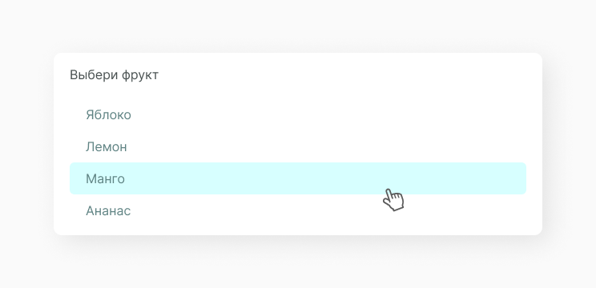

Select and Multiselect Input
Тег <select> (от англ. select — выбрать) позволяет создать элемент интерфейса в виде раскрывающегося списка, а также список с одним или множественным выбором.
Конечный вид зависит от использования атрибута size, который устанавливает высоту списка. Ширина списка определяется самым широким текстом, указанным в элементе <option>, а также может изменяться с помощью стилей. Каждый пункт создаётся с помощью элемента option, который должен быть вложен в контейнер <select>. Если планируется отправлять данные списка на сервер, то требуется поместить <select> внутрь формы.
Структура компонента
Select бывает с единичным выбором и с множественным. В зависимости от этого input заполняется по разному. В select с единичным выбором заполняется вся строка input, а в селекте с множественным строка заполняется chip. Компонент состоит из input и option list.
Input
Элемент input является основным элементом формы (HTML тег <form>) и определяет интерактивное поле для ввода информации.
Options List
Options List — это список возможных объектов для выбора значения input. Опции содержат строки данных и обычно имеют такой размер, чтобы всегда были видны несколько строк. Строки могут содержать один или несколько столбцов с заголовками или без них. Если options содержит больше строк, чем может быть отображено в элементе управления, появится скролл. Выбор ограничен вариантами, представленными в списке, но в зависимости от функциональности через input можно добавить новый элемент списска.
Filled Input
При единичном выборе значения из списка input выглядит таким образом. Подробнее про такой вид компонента select input.
При множественном выборе значения из списка input выглядит таким образом. Подробнее про такой вид компонента multiselect input.
Состояние компонента
Исходя из структуры, мы можем выявить несколько состояний компонента с данными и без них.
А также состояние инпута, когда открыт option list.
Ссылки
Также для тебя ссылки на Figma с дизайн системой и GitHub с библиотекой компонентов.
Составляющие
В этот компонент часто выводятся следующие компоненты.
Chip
Интерактивный элемент множественного выбора.
Option Item
Функциональный элемент выпадающего спасска.
Этот компонент часто выводится в следующих компонентах.